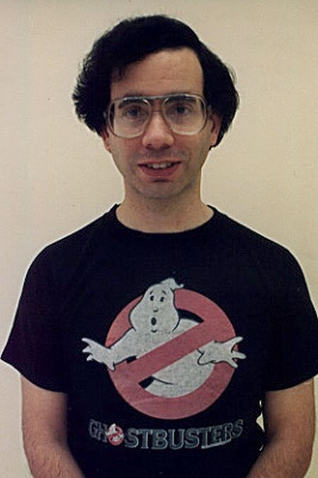
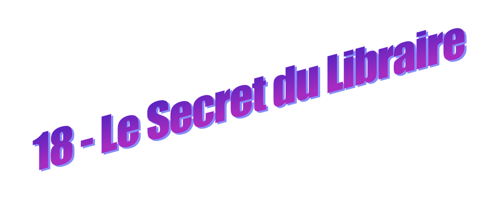
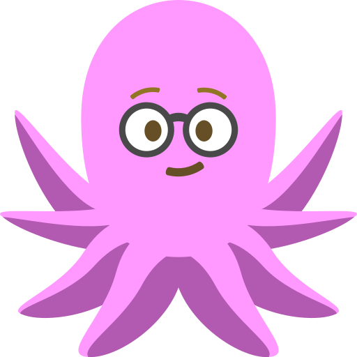
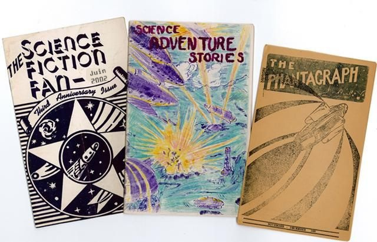

Le libraire récupère sa Game Boy et observe quelques secondes l'écran."Je savais que tu y arriverais."
Tu ne sais pas exactement pourquoi, mais cette phrase te fait plus plaisir qu'elle ne le devrait.
Il jette un coup d'œil vers la vitrine où tes amies continuent de comparer figurines, cartes postales et bijoux de fées. Puis il te fait discrètement signe de le suivre.
"Viens."
Ton cœur accélère immédiatement. Le lourd rideau violet se dresse au fond de la boutique comme une frontière entre deux mondes. Tu l'avais remarqué en entrant. Tu t'étais demandé ce qu'il pouvait bien cacher. Une réserve ? Un bureau ? Un entrepôt poussiéreux rempli de cartons ?
Le libraire soulève un pan du tissu.
"Juste cinq minutes. Après tes copines vont croire que je t'ai kidnappée."
Tu éclates de rire et te glisses derrière lui.
De l'autre côté, la pièce est beaucoup plus grande que ce que tu imaginais. Une longue table occupe le centre de la salle. Plusieurs adolescents y sont installés. Certains griffonnent dans des cahiers cornés. D'autres discutent en agitant des cartes Magic. Un garçon est en train de recoller l'aile arrachée d'une figurine de vampire. Une fille aux cheveux rouges peint minutieusement les griffes d'une créature ailée atrocement mutilée. Une montagne de feuilles imprimées occupe un coin de la pice. L'ambiance est joyeuse et totalement désorganisée. Personne ne semble s'en inquiéter.

Tu restes figée sur le seuil. Personne ici ne ressemble à un élève populaire. Personne ici ne semble chercher à le devenir. Le libraire pose une main sur une pile de fascicules reliés par deux agrafes.
"On fabrique ça."
Tu en prends un. La couverture représente une cité spatiale en train de s'effondrer dans une pluie de météorites, fracturée par un titre avec ces typographies style années 70s qui dit " réveille-toi ".
- Des nouvelles ? T'enquiers-tu.
- Fantastique. Science-fiction. Horreur parfois.
Il hausse les épaules.
- Tout ce qui aide à survivre au lycée.
Quelques rires s'élèvent autour de la table.
Il reprend :
- On imprime un numéro tous les mois.
- Et les gens l'achètent ?
- Pas vraiment.
Il sourit.
- Ils le trouvent.

Cette réponse te paraît parfaitement logique.
- Ce sont des histoires écrites par les jeunes d'ici ?
- Oui. Ceux qui ont des choses à dire et n'ont pas trouvé d'endroit pour les dire ailleurs.
Son regard se pose sur toi. Tu baisses immédiatement les yeux. Il poursuit son explication :
- Les profs n'écoutent pas toujours. Les parents non plus. Les conseillers d'orientation encore moins. Alors parfois on invente nos propres espaces.
Tu fais lentement glisser ton pouce sur la couverture du fascicule.
- Les textes parlent de dragons, d'aliens, de vampires... mais rarement de dragons, d'aliens ou de vampires.
Cette fois tu comprends parfaitement ce qu'il veut dire. Une fille au fond de la salle te salue de la main.
- Salut !
Un garçon lève son stylo.
- Bienvenue dans la pièce secrète !
Tu sens tes joues s'empourprer, mais pour une raison étrange, tu ne te sens pas jugée, et au contraire, totalement accueillie et bienvenue. En fait, tu te sens observée comme on observe quelqu'un qu'on espère revoir.
Le libraire te tend alors un exemplaire du zine.
- Si un jour tu as envie d'écrire, on te trouvera une place autour de la table.
Tu ouvres la bouche pour répondre. Aucun son ne sort, tu es totalement abasourdie par ce chavirement impromptu du plan parfaitement millimétré de ta journée...
Il éclate de rire.
" Oui, j'avais remarqué que tu n'étais pas du genre bavarde."
La salle entière approuve silencieusement dans un acquiescement bienveillant. Quelqu'un ajoute :
"C'est souvent les plus silencieux qui écrivent les meilleurs monstres."
Les autres hochent la tête avec un sérieux absurde. Puis, sans prévenir, la fille aux cheveux de feu monte sur sa chaise et s'exprime à son tour :
- Bon. Comme on a une nouvelle visiteuse...
Tous les regards convergent vers elle.
- Cri de ralliement !
- Oh non... soupire quelqu'un.
- Oh siiiiii !
Et soudain toute la salle pousse un étrange hurlement de coyote.
- AOUUUUUUUUUUUUUUUUUUUUUUUUUUUU... IIIIIIIIIIIIIIII !
La dernière note monte si haut qu'elle en devient ridicule. Ca sonne un peu comme "Halloween" mais sans aucune consonne.
Tu éclates de rire, un rire absolument incontrôlable comme tu en produis rarement. Le genre de rire qui te plie en deux. Quand tu reprends enfin ton souffle, le libraire te raccompagne jusqu'à la boutique. Avant de quitter la pièce, tu te retournes une dernière fois. Les jeunes ont déjà recommencé à écrire, discuter, peindre et inventer des mondes... Comme si cet endroit avait toujours existé... Comme s'il t'avait toujours attendue.
Quand tu ressors enfin dans la rue, Emma croise les bras.
- Qu'est-ce que tu fichais là-dedans depuis tout ce temps ?
Tu serres contre toi le livre destiné à Aude.
- Rien, rien...
Tu souris.
- J'ai peut-être trouvé un cadeau pour toi, ma chère Aude.
Aude arque un sourcil. Emma te dévisage avec méfiance. Et pour la première fois de l'aprés-midi, tu as l'impression de détenir un secret.